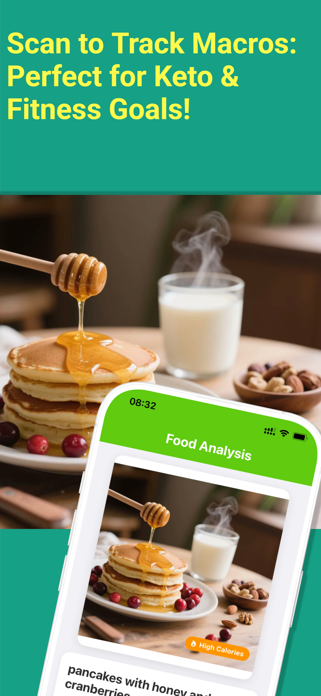
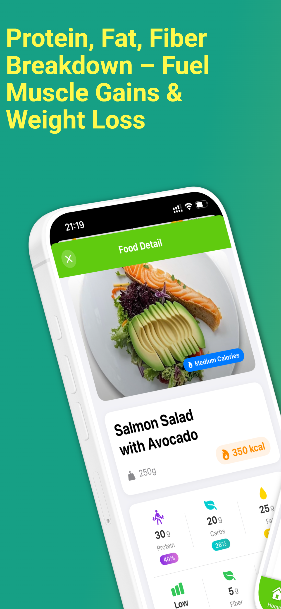
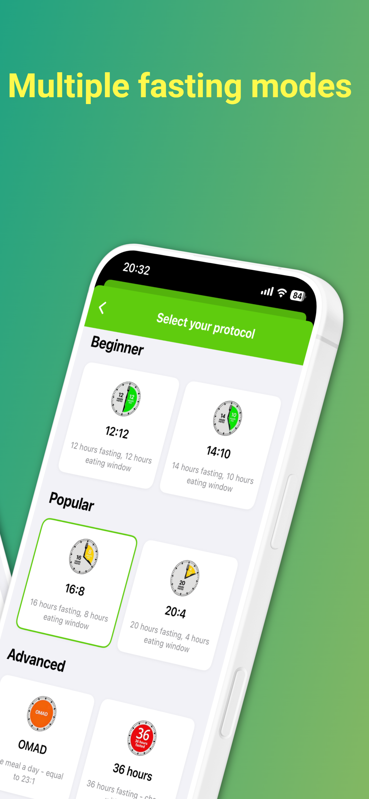
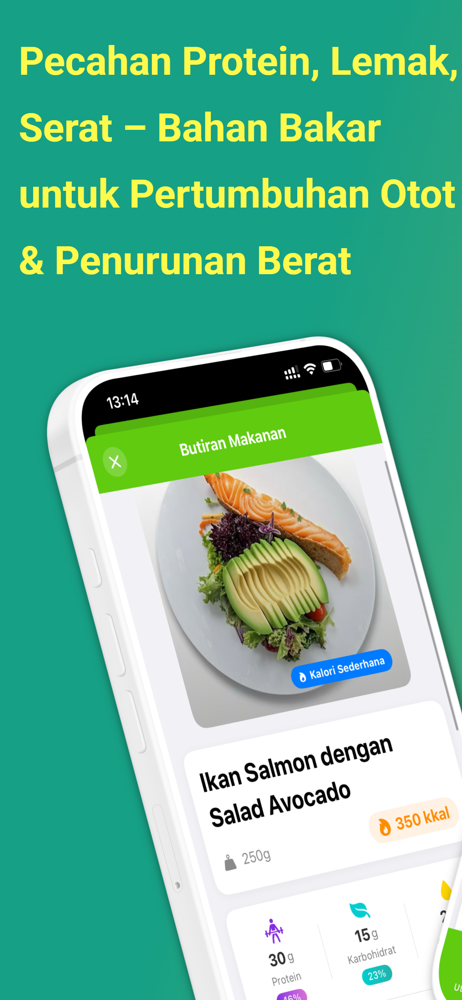
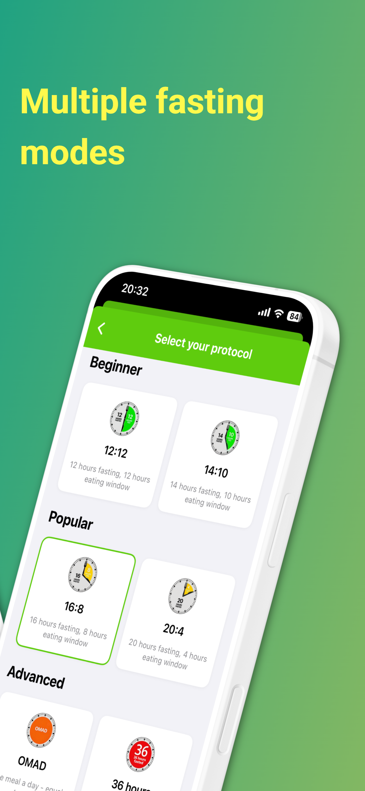
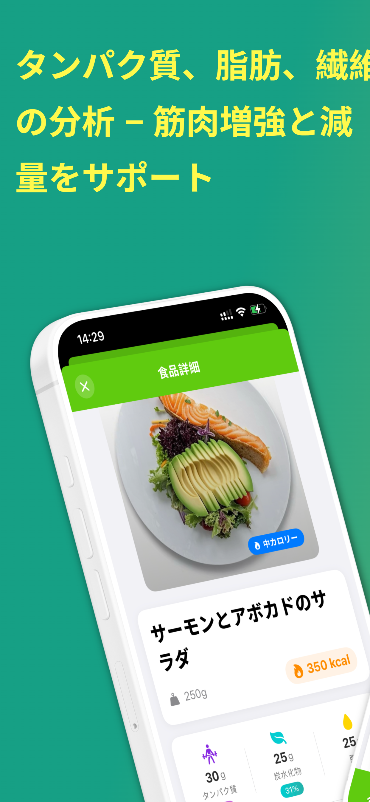
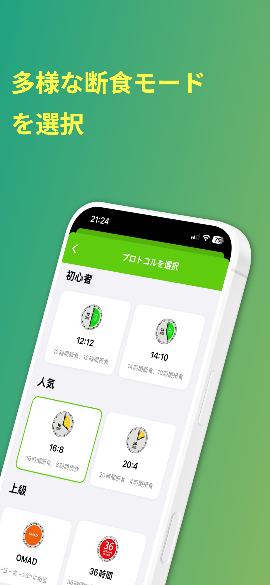
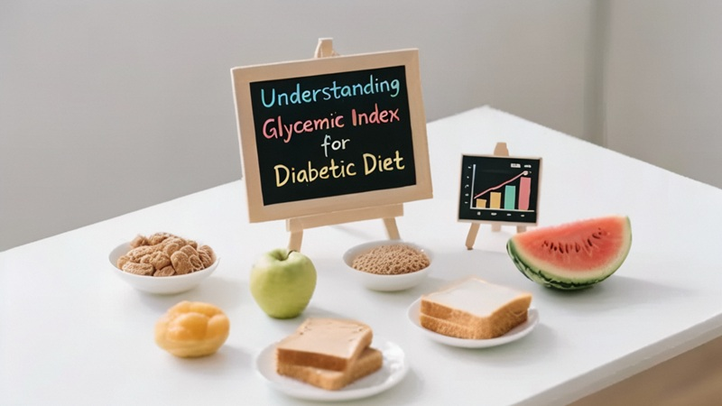
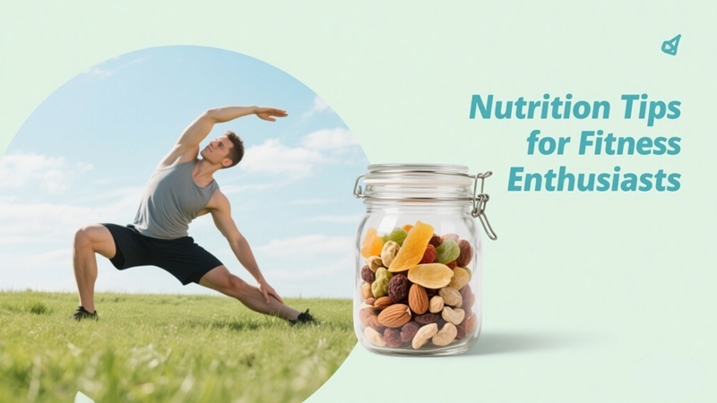
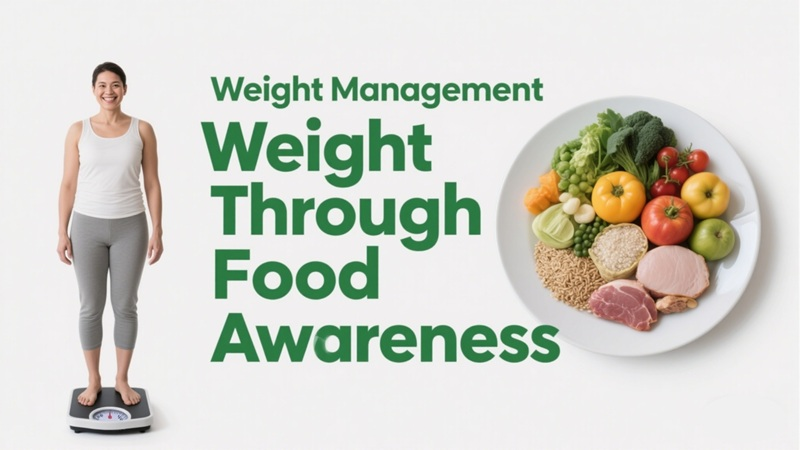

The Benefits of a High-Protein Diet
Learn how increasing your protein intake can help with weight loss and muscle building...
Read MoreTrack Your Nutrition With Just a Photo
Looking for a free iOS app to identify food calories by photo? Try Diet Scan AI! Optimized for users worldwide, it easily records calories, protein, fat, carbs, GI, and purine index for home-cooked meals, takeout, or packaged foods just by taking a picture. Powered by advanced AI deep learning, it's more than a calorie counter—it's your smart diet diary and nutrition partner, helping you achieve your weight loss, blood sugar control, or healthy eating goals effortlessly.







Take a photo of your meal and get instant nutrition information.
Monitor calories, protein, carbs, and fat intake daily.
Track the GI of foods to manage blood sugar levels.
Review past meals and track your nutrition trends over time.
Multiple intermittent fasting modes like 16:8/5:2.
Log water, tea, coffee, and sparkling water.
Trend chart shows your changes.
Get suggestions for a more balanced diet based on your eating habits.
Capture your meal with your phone's camera.
Our AI analyzes the food and provides detailed nutrition facts.
Log your meals and monitor your progress towards a healthier lifestyle.
Yes, Diet Scan AI is free to download and use. We offer optional premium features for advanced users.
Currently, Diet Scan AI is available exclusively on iOS. An Android version is in development.
Our AI is trained on a massive dataset of food images to provide highly accurate results. Accuracy improves over time as more users contribute data.
Absolutely! You can easily log your intake of water, tea, coffee, and other beverages.

Learn how increasing your protein intake can help with weight loss and muscle building...
Read More
A guide to how the glycemic index affects your blood sugar and energy levels...
Read More
Everything you need to know to get started with intermittent fasting...
Read MoreDownload the app and take the first step towards a healthier lifestyle.